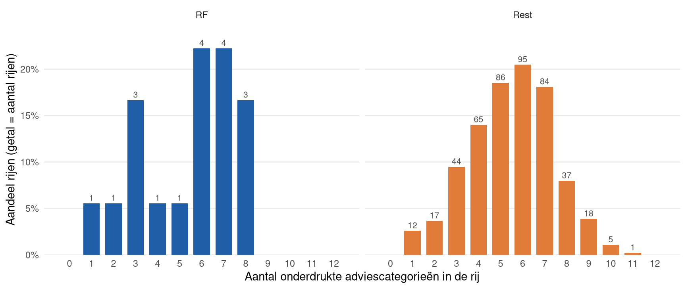

LTA analyses — schooladviezen: missings en RF vs Rest (beschrijvend)
Author
Mike Ogwuru; Abe Hofman
Code
library(tidyverse)library(knitr)library(conflicted)# Zelfde afspraak als in LTA_analyses_nomod.qmd, voor het geval MASS geladen isconflict_prefer("select", "dplyr")conflict_prefer("filter", "dplyr")theme_set(theme_minimal(base_size =11))kleur_conditie <-c(RF ="#1F5FA8", Rest ="#E07B39")kleur_status <-c("Nul"="#D5D5D5", "Onderdrukt (<5)"="#8E5BC2", "Bekend (5 of meer)"="#2E8B57")pct <-function(x, d =1) round(100* x, d)
Dit document hoort bij LTA_analyses_nomod.qmd en gebruikt dezelfde dataset (data/processed/lta_data.rds). Het beantwoordt één vraag: is de open DUO-data over schooladviezen (doorstroomadviezen) toereikend om RF-scholen met de overige scholen te vergelijken? Er worden geen modellen geschat. Het document beschrijft (1) hoeveel van de adviesdata ontbreekt of onderdrukt is, en (2) wat er over de adviesverdeling per conditie hoogstens en minstens gezegd kan worden, gegeven die onderdrukking.
1. Data import en selectie
Code
pad_data <- here::here("data", "processed", "lta_data.rds")if (!file.exists(pad_data)) {source(here::here("R", "01_data_cleaning.R"), local =new.env())}# De twaalf adviescategorieën uit het DUO-bestand, in oplopende volgorde van niveau.# VSO en ADVIES_NIET_MOGELIJK staan aan de uiteinden en tellen wel mee in het totaal.adviezen <-c("VSO", "PRO", "VMBO_B", "VMBO_B_K", "VMBO_K", "VMBO_K_GT", "VMBO_GT","VMBO_GT_HAVO", "HAVO", "HAVO_VWO", "VWO", "ADVIES_NIET_MOGELIJK")advies_label <-c(VSO ="vso", PRO ="pro", VMBO_B ="vmbo-b", VMBO_B_K ="vmbo-b/k",VMBO_K ="vmbo-k", VMBO_K_GT ="vmbo-k/gt", VMBO_GT ="vmbo-gt",VMBO_GT_HAVO ="vmbo-gt/havo", HAVO ="havo", HAVO_VWO ="havo/vwo",VWO ="vwo", ADVIES_NIET_MOGELIJK ="advies niet mogelijk")# Zelfde uitsluiting als in LTA_analyses_nomod.qmd (sectie 3):# 12WT en 14AI (inconsistente aantallen), 18WG (Blijvliet).uitgesloten_brin <-c("14AI", "12WT", "18WG")df_raw <-readRDS(pad_data)df <- df_raw |>filter(!Brin %in% uitgesloten_brin) |>mutate(school_id =paste(Brin, v_code, sep ="_"),conditie =factor(conditie, levels =c("RF", "Rest")),jaar =factor(Toetsjaar) )bind_rows( df_raw |>mutate(stap ="alle vestigingen in lta_data"), df |>mutate(stap ="na uitsluiting 12WT, 14AI, 18WG", conditie =as.character(conditie))) |>mutate(stap =fct_inorder(stap)) |>group_by(stap, conditie) |>summarise(vestigingen =n_distinct(paste(Brin, v_code)), rijen =n(), .groups ="drop") |>kable(caption ="Vestigingen en rijen (vestiging × toetsjaar) per conditie")
Vestigingen en rijen (vestiging × toetsjaar) per conditie
stap
conditie
vestigingen
rijen
alle vestigingen in lta_data
RF
7
21
alle vestigingen in lta_data
Rest
162
480
na uitsluiting 12WT, 14AI, 18WG
RF
6
18
na uitsluiting 12WT, 14AI, 18WG
Rest
160
474
2. Hoe de adviesdata eruitziet
Per vestiging × toetsjaar bevat het DUO-bestand twaalf kolommen met het aantal leerlingen per adviescategorie. Elke cel heeft één van drie vormen: 0, een getal van 5 of hoger, of <5 (onderdrukt). Twee eigenschappen maken deze data lastiger dan de referentieniveaus:
Er is geen totaalkolom. Bij de referentieniveaus kan één onderdrukte categorie worden afgeleid uit DS_N. Bij de adviezen ontbreekt zo’n totaal, en zijn er per rij doorgaans meerdere onderdrukte cellen. Afleiden kan dus niet.
De leerlingen worden over twaalf categorieën verdeeld in plaats van drie. Bij een groep 8 van 20 à 40 leerlingen komt daardoor bijna elke bezette categorie onder de 5 uit.
2.1 Wat betekent <5?
In LTA_analyses_nomod.qmd wordt uitgegaan van een onderliggende waarde in 0–4. Omdat 0 in de bestanden als aparte waarde voorkomt, ligt 1–4 meer voor de hand. Dat is te controleren met de referentieniveaus: in rijen waar precies één categorie is onderdrukt, is de onderliggende waarde af te leiden als DS_N − som(overige twee).
Code
df_raw |>filter(!is.na(DS_N)) |>mutate(across(c(L_1F, `1F`, `1S`), ~suppressWarnings(as.numeric(na_if(.x, "<5")))),n_missing =is.na(L_1F) +is.na(`1F`) +is.na(`1S`),rest_N = DS_N -rowSums(across(c(L_1F, `1F`, `1S`)), na.rm =TRUE) ) |>filter(n_missing ==1) |>mutate(`afgeleide waarde`=case_when( rest_N <0~"negatief (DS_N inconsistent)", rest_N >4~"groter dan 4",TRUE~as.character(rest_N) )) |>count(`afgeleide waarde`, name ="rijen") |>kable(caption ="Referentieniveaus: afgeleide waarde van de ene onderdrukte categorie")
Referentieniveaus: afgeleide waarde van de ene onderdrukte categorie
afgeleide waarde
rijen
0
2
1
65
2
57
3
60
4
49
negatief (DS_N inconsistent)
3
De afgeleide waarde is vrijwel altijd 1, 2, 3 of 4 en bijna nooit 0. In de rest van dit document staat <5 daarom voor een geheel getal van 1 tot en met 4. Dat is de gunstigste aanname voor de bruikbaarheid van de data: bij 0–4 worden alle grenzen hieronder nog breder.
Code
# Eén rij per vestiging x toetsjaar x adviescategorie, met onder- en bovengrens per celadv_long <- df |>select(school_id, Brin, INSTELLINGSNAAM_VESTIGING, conditie, jaar, Toets, DS_N, all_of(adviezen)) |>pivot_longer(all_of(adviezen), names_to ="advies", values_to ="waarde") |>mutate(advies =factor(advies, levels = adviezen),status =case_when( waarde =="<5"~"Onderdrukt (<5)", waarde =="0"~"Nul",TRUE~"Bekend (5 of meer)" ),status =factor(status, levels =names(kleur_status)),n =suppressWarnings(as.numeric(waarde)), # NA bij <5n_min =if_else(waarde =="<5", 1, n),n_max =if_else(waarde =="<5", 4, n),n_mid =if_else(waarde =="<5", 2.5, n) # naïeve imputatie (midden van 1-4) )# Samenvatting per vestiging x toetsjaaradv_rij <- adv_long |>group_by(school_id, Brin, INSTELLINGSNAAM_VESTIGING, conditie, jaar, Toets, DS_N) |>summarise(n_onderdrukt =sum(status =="Onderdrukt (<5)"),n_bekend =sum(status =="Bekend (5 of meer)"),n_nul =sum(status =="Nul"),som_bekend =sum(n, na.rm =TRUE),tot_min =sum(n_min),tot_max =sum(n_max),.groups ="drop" ) |>mutate(geen_advies = tot_max ==0)
3. Missings
Er zijn twee soorten ontbrekende informatie: rijen die helemaal ontbreken (3.1) en onderdrukte cellen binnen rijen die wel bestaan (3.2–3.4).
3.1 Rijen zonder adviezen of zonder doorstroomtoets
Code
adv_rij |>group_by(conditie, jaar) |>summarise(rijen =n(),`geen enkel advies (alles 0)`=sum(geen_advies),`geen DS_N`=sum(is.na(DS_N)),`geen advies, wel DS_N`=sum(geen_advies &!is.na(DS_N)),.groups ="drop" ) |>kable(caption ="Rijen zonder adviesgegevens of zonder doorstroomtoets (Cito/IEP)")
Rijen zonder adviesgegevens of zonder doorstroomtoets (Cito/IEP)
conditie
jaar
rijen
geen enkel advies (alles 0)
geen DS_N
geen advies, wel DS_N
RF
2023
6
0
0
0
RF
2024
6
0
0
0
RF
2025
6
0
0
0
Rest
2023
157
7
14
6
Rest
2024
157
0
8
0
Rest
2025
160
3
11
0
Code
adv_rij |>filter(geen_advies) |>select(Brin, INSTELLINGSNAAM_VESTIGING, conditie, jaar, Toets, DS_N) |>kable(caption ="Vestiging × toetsjaar waarin alle twaalf adviescategorieën 0 zijn")
Vestiging × toetsjaar waarin alle twaalf adviescategorieën 0 zijn
Brin
INSTELLINGSNAAM_VESTIGING
conditie
jaar
Toets
DS_N
13LW
Dakparkschool
Rest
2023
IEP
19
13TA
KC Bamboe
Rest
2023
IEP
44
16UW
Pnielschool
Rest
2023
IEP
20
19MP
De Kameleon
Rest
2023
Cito
18
19TA
De Vuurtoren
Rest
2023
Cito
26
31JX
Risala
Rest
2023
IEP
68
31PR
IBS Isra
Rest
2023
NA
NA
32DD
Aida
Rest
2025
NA
NA
32EU
Enderun Hisar Amsterdam
Rest
2025
NA
NA
32EZ
Enderun Hisar Rotterdam
Rest
2025
NA
NA
Rijen waarin alle adviescategorieën 0 zijn terwijl er wel een doorstroomtoets is afgenomen, zijn geen scholen zonder groep 8 maar scholen waarvan de adviezen niet in het DUO-bestand staan. Deze rijen dragen niets bij aan de adviesanalyse en worden vanaf hier weggelaten.
Rijen zonder DS_N zijn een gevolg van R/01_data_cleaning.R: alleen Cito (LIB/CET) en IEP worden meegenomen. Scholen met Route 8, DIA, AMN of DOE krijgen daardoor geen DS_N en geen score, hoewel ze wel een doorstroomtoets hebben afgenomen. Voor de adviezen is dat geen probleem; voor de toetsscores (sectie 5) wel.
Code
adv_rij_ok <- adv_rij |>filter(!geen_advies)adv_long_ok <- adv_long |>semi_join(adv_rij_ok, by =c("school_id", "jaar"))
3.2 Onderdrukking per cel
Code
cel_totaal <- adv_long_ok |>count(conditie, status) |>group_by(conditie) |>mutate(aandeel = n /sum(n)) |>ungroup()cel_totaal |>mutate(`%`=pct(aandeel)) |>select(conditie, status, cellen = n, `%`) |>kable(caption ="Status van alle cellen (vestiging × toetsjaar × adviescategorie)")
Status van alle cellen (vestiging × toetsjaar × adviescategorie)
conditie
status
cellen
%
RF
Nul
79
36.6
RF
Onderdrukt (<5)
97
44.9
RF
Bekend (5 of meer)
40
18.5
Rest
Nul
1804
32.4
Rest
Onderdrukt (<5)
2545
45.7
Rest
Bekend (5 of meer)
1219
21.9
Code
# Van de cellen waar leerlingen in zitten (niet 0): welk deel is onderdrukt?bezet <- adv_long_ok |>filter(status !="Nul") |>group_by(conditie) |>summarise(`bezette cellen`=n(),onderdrukt =sum(status =="Onderdrukt (<5)"),`% onderdrukt`=pct(onderdrukt /`bezette cellen`),.groups ="drop" )bezet |>kable(caption ="Bezette cellen (niet 0): aandeel onderdrukt")
Figure 1: Status van de cellen per adviescategorie en conditie (alle toetsjaren samen). Het getal in de balk is het percentage onderdrukte cellen.
In de onderdrukte cellen (paars) is het aantal leerlingen onbekend. In vrijwel elke reguliere adviescategorie is ongeveer de helft of meer van de cellen onderdrukt, ook bij havo, havo/vwo en vwo, de categorieën die voor een vraag over hogere adviezen het meest tellen.
3.3 Onderdrukking per rij
Code
adv_rij_ok |>group_by(conditie) |>summarise(rijen =n(),`rijen zonder onderdrukking`=sum(n_onderdrukt ==0),`gem. onderdrukte cellen`=round(mean(n_onderdrukt), 1),`mediaan onderdrukte cellen`=median(n_onderdrukt),`gem. bekende cellen (>=5)`=round(mean(n_bekend), 1),`rijen met >= 5 onderdrukt`=sum(n_onderdrukt >=5),.groups ="drop" ) |>kable(caption ="Onderdrukte adviescategorieën per rij (van de twaalf)")
Onderdrukte adviescategorieën per rij (van de twaalf)
conditie
rijen
rijen zonder onderdrukking
gem. onderdrukte cellen
mediaan onderdrukte cellen
gem. bekende cellen (>=5)
rijen met >= 5 onderdrukt
RF
18
0
5.4
6
2.2
12
Rest
464
0
5.5
6
2.6
326
Code
adv_rij_ok |>count(conditie, n_onderdrukt) |>group_by(conditie) |>mutate(aandeel = n /sum(n)) |>ggplot(aes(x = n_onderdrukt, y = aandeel, fill = conditie)) +geom_col(width =0.75, show.legend =FALSE) +geom_text(aes(label = n), vjust =-0.4, size =2.8, colour ="grey30") +facet_wrap(~ conditie) +scale_x_continuous(breaks =0:12, limits =c(-0.5, 12.5)) +scale_y_continuous(labels = scales::percent, expand =expansion(mult =c(0, 0.12))) +scale_fill_manual(values = kleur_conditie) +labs(x ="Aantal onderdrukte adviescategorieën in de rij", y ="Aandeel rijen (getal = aantal rijen)") +theme(panel.grid.minor =element_blank(), panel.grid.major.x =element_blank())

Figure 2: Aantal onderdrukte adviescategorieën per vestiging × toetsjaar. Een rij met 0 onderdrukte cellen zou een volledig bekende adviesverdeling hebben.
Bij de referentieniveaus is een rij bruikbaar zodra hoogstens één van de drie categorieën is onderdrukt. Voor de adviezen bestaat er geen enkele rij met een volledig bekende verdeling, en ook geen manier om de onderdrukte cellen af te leiden.
3.4 Hoeveel leerlingen zijn zichtbaar?
Per rij is alleen de som van de bekende cellen (5 of meer) een hard getal. Het werkelijke aantal leerlingen ligt tussen som_bekend + 1 × onderdrukte cellen en som_bekend + 4 × onderdrukte cellen.
Code
zichtbaar <- adv_rij_ok |>group_by(conditie, jaar) |>summarise(vestigingen =n(),`leerlingen bekend`=sum(som_bekend),`totaal minimaal`=sum(tot_min),`totaal maximaal`=sum(tot_max),.groups ="drop" ) |>mutate(`% in onderdrukte cel (min)`=pct(1-`leerlingen bekend`/`totaal minimaal`),`% in onderdrukte cel (max)`=pct(1-`leerlingen bekend`/`totaal maximaal`) )zichtbaar |>kable(caption ="Leerlingen in bekende cellen versus het mogelijke totaal, per conditie en toetsjaar")
Leerlingen in bekende cellen versus het mogelijke totaal, per conditie en toetsjaar
conditie
jaar
vestigingen
leerlingen bekend
totaal minimaal
totaal maximaal
% in onderdrukte cel (min)
% in onderdrukte cel (max)
RF
2023
6
121
150
237
19.3
48.9
RF
2024
6
64
98
200
34.7
68.0
RF
2025
6
96
130
232
26.2
58.6
Rest
2023
150
2784
3654
6264
23.8
55.6
Rest
2024
157
3196
4022
6500
20.5
50.8
Rest
2025
157
3104
3953
6500
21.5
52.2
Code
# Ter vergelijking: DS_N als benadering van het totaal (alleen rijen met Cito/IEP)adv_rij_ok |>filter(!is.na(DS_N)) |>group_by(conditie) |>summarise(rijen =n(),`leerlingen bekend`=sum(som_bekend),`DS_N (som)`=sum(DS_N),`% van DS_N bekend`=pct(`leerlingen bekend`/`DS_N (som)`),`DS_N < tot_min`=sum(DS_N < tot_min),`DS_N > tot_max`=sum(DS_N > tot_max),.groups ="drop" ) |>kable(caption ="Bekende leerlingen afgezet tegen het aantal deelnemers aan de doorstroomtoets (DS_N)")
Bekende leerlingen afgezet tegen het aantal deelnemers aan de doorstroomtoets (DS_N)
conditie
rijen
leerlingen bekend
DS_N (som)
% van DS_N bekend
DS_N < tot_min
DS_N > tot_max
RF
18
281
477
58.9
1
0
Rest
435
8781
12941
67.9
56
2
DS_N is geen exact totaal voor de adviezen: in een deel van de rijen ligt het buiten het interval dat de adviesdata toelaat (meer adviezen dan toetsdeelnemers, of andersom). Het is dus hooguit een benadering.
Figure 3: Aandeel van de bezette adviescategorieën dat onderdrukt is, afgezet tegen het aantal toetsdeelnemers (DS_N). Elke stip is een vestiging × toetsjaar; RF-scholen in blauw. Alleen rijen met Cito of IEP.
De onderdrukking hangt direct samen met schoolgrootte: hoe kleiner de groep 8, hoe groter het deel van de adviezen dat onder de 5 blijft. De missings zijn dus niet willekeurig (missing not at random). De RF-scholen zijn klein en vallen daarmee in het deel van de figuur waar de meeste categorieën onderdrukt zijn; ze wijken daarin niet af van Rest-scholen van dezelfde omvang.
4. Wat valt er wel te zeggen: onder- en bovengrenzen
Omdat elke onderdrukte cel 1 tot en met 4 leerlingen bevat, is voor elk aandeel een harde onder- en bovengrens te berekenen. Die grenzen bevatten geen statistische aanname: de werkelijke waarde ligt er zeker tussen, maar waar is onbekend. De grenzen beschrijven alleen de onzekerheid door onderdrukking. De steekproefonzekerheid door het kleine aantal RF-scholen (zie de cluster-bootstrap in LTA_analyses_nomod.qmd) komt daar nog bovenop.
Alle aandelen hieronder zijn leerling-gewogen per conditie × toetsjaar, met alle twaalf categorieën in de noemer.
Figure 4: Aandeel leerlingen per adviescategorie: onder- en bovengrens (lijn) en naïeve schatting waarbij elke onderdrukte cel als 2,5 telt (stip). De werkelijke waarde ligt ergens op de lijn.
Code
overlap_cat <- grenzen_cat |>select(jaar, advies, conditie, onder, boven, cellen_onderdrukt) |>pivot_wider(names_from = conditie, values_from =c(onder, boven, cellen_onderdrukt)) |>mutate(overlap = onder_RF <= boven_Rest & onder_Rest <= boven_RF)overlap_cat |>count(overlap =if_else(overlap, "intervallen overlappen", "intervallen overlappen niet"),name ="categorie × toetsjaar") |>kable(caption ="Overlap van de intervallen van RF en Rest per adviescategorie × toetsjaar")
Overlap van de intervallen van RF en Rest per adviescategorie × toetsjaar
overlap
categorie × toetsjaar
intervallen overlappen
32
intervallen overlappen niet
4
Code
overlap_cat |>filter(!overlap) |>transmute( jaar, advies = advies_label[as.character(advies)],`RF %`=paste0(pct(onder_RF), " – ", pct(boven_RF)),`Rest %`=paste0(pct(onder_Rest), " – ", pct(boven_Rest)) ) |>kable(caption ="Categorie × toetsjaar waar de intervallen van RF en Rest niet overlappen")
Categorie × toetsjaar waar de intervallen van RF en Rest niet overlappen
jaar
advies
RF %
Rest %
2023
vso
0 – 0
0.1 – 1
2023
advies niet mogelijk
0 – 0
1.5 – 4.1
2024
vso
0 – 0
0.1 – 0.9
2025
vso
0 – 0
0.1 – 0.8
In alle reguliere adviescategorieën (pro tot en met vwo) overlappen de intervallen van RF en Rest, in elk toetsjaar. De enige uitzonderingen zijn vso en “advies niet mogelijk”: daar zijn alle RF-cellen 0, terwijl een klein deel van de Rest-scholen er wel leerlingen heeft.
4.2 Twee drempels: havo of hoger, en vmbo-gt/havo of hoger
Code
drempels <-list("havo of hoger"=c("HAVO", "HAVO_VWO", "VWO"),"vmbo-gt/havo of hoger"=c("VMBO_GT_HAVO", "HAVO", "HAVO_VWO", "VWO"))# Onder- en bovengrens van het aandeel leerlingen in de categorieën `hoog`.# Ondergrens: onderdrukte cellen in `hoog` op 1, alle overige onderdrukte cellen op 4.grenzen_drempel <-function(long, hoog) { long |>mutate(is_hoog = advies %in% hoog) |>group_by(conditie, jaar) |>summarise(vestigingen =n_distinct(school_id),h_bekend =sum(n[is_hoog], na.rm =TRUE),h_cellen_onderdrukt =sum(is.na(n[is_hoog])),h_min =sum(n_min[is_hoog]), h_max =sum(n_max[is_hoog]), h_mid =sum(n_mid[is_hoog]),l_min =sum(n_min[!is_hoog]), l_max =sum(n_max[!is_hoog]), l_mid =sum(n_mid[!is_hoog]),.groups ="drop" ) |>mutate(onder = h_min / (h_min + l_max),boven = h_max / (h_max + l_min),midden = h_mid / (h_mid + l_mid),breedte = boven - onder )}grenzen <-imap(drempels, \(hoog, naam) grenzen_drempel(adv_long_ok, hoog) |>mutate(drempel = naam)) |>list_rbind() |>mutate(drempel =fct_inorder(drempel))grenzen |>transmute( drempel, jaar, conditie, vestigingen,`leerlingen bekend (hoog)`= h_bekend,`onderdrukte cellen (hoog)`= h_cellen_onderdrukt,`ondergrens %`=pct(onder), `bovengrens %`=pct(boven),`breedte (procentpunt)`=pct(breedte),`naïef (<5 = 2,5) %`=pct(midden) ) |>arrange(drempel, jaar, conditie) |>kable(caption ="Aandeel leerlingen op of boven de drempel: grenzen per conditie en toetsjaar")
Aandeel leerlingen op of boven de drempel: grenzen per conditie en toetsjaar
Figure 5: Aandeel leerlingen met een advies op of boven de drempel. Lijn: onder- en bovengrens gegeven de onderdrukking. Open stip: naïeve schatting (elke onderdrukte cel = 2,5). Zolang de lijnen van RF en Rest overlappen, is op basis van deze data niet te zeggen welke conditie hoger ligt.
4.3 Verschil RF − Rest en verandering over tijd
Het verschil tussen de condities is begrensd door ondergrens RF − bovengrens Rest en bovengrens RF − ondergrens Rest. Voor een verandering over tijd, en voor het verschil in verandering (difference-in-differences), stapelen de grenzen op dezelfde manier.
# Verandering tussen twee toetsjaren en het verschil in verandering (RF − Rest)verandering <-function(van, tot) { grenzen |>filter(jaar %in%c(van, tot)) |>select(drempel, jaar, conditie, onder, boven, midden) |>pivot_wider(names_from = jaar, values_from =c(onder, boven, midden)) |>transmute( drempel, conditie,d_onder = .data[[paste0("onder_", tot)]] - .data[[paste0("boven_", van)]],d_boven = .data[[paste0("boven_", tot)]] - .data[[paste0("onder_", van)]],d_naief = .data[[paste0("midden_", tot)]] - .data[[paste0("midden_", van)]] ) |>pivot_wider(names_from = conditie, values_from =c(d_onder, d_boven, d_naief)) |>transmute(periode =paste(van, "→", tot), drempel,`verandering RF`=paste0(pct(d_onder_RF), " tot ", pct(d_boven_RF)),`verandering Rest`=paste0(pct(d_onder_Rest), " tot ", pct(d_boven_Rest)),`verschil in verandering (RF − Rest)`=paste0(pct(d_onder_RF - d_boven_Rest), " tot ", pct(d_boven_RF - d_onder_Rest)),`naïef`=pct(d_naief_RF - d_naief_Rest) )}bind_rows(verandering("2023", "2025"), verandering("2024", "2025")) |>kable(caption ="Grenzen van de verandering over tijd, in procentpunten")
Grenzen van de verandering over tijd, in procentpunten
periode
drempel
verandering RF
verandering Rest
verschil in verandering (RF − Rest)
naïef
2023 → 2025
havo of hoger
-27.8 tot 16.7
-24.5 tot 20.1
-47.9 tot 41.2
-3.7
2023 → 2025
vmbo-gt/havo of hoger
-34.6 tot 15.3
-23.8 tot 26.1
-60.7 tot 39
-10.6
2024 → 2025
havo of hoger
-39.4 tot 16.9
-20.6 tot 21.8
-61.2 tot 37.5
-10.7
2024 → 2025
vmbo-gt/havo of hoger
-48.5 tot 13.8
-23.9 tot 23.4
-71.9 tot 37.7
-16.6
Bij beide drempels en in elk toetsjaar bevat het interval van het verschil RF − Rest zowel negatieve als positieve waarden van tientallen procentpunten. Voor de verandering over tijd geldt hetzelfde: zowel een daling als een stijging is met de data verenigbaar, voor RF, voor Rest en voor het verschil daartussen. De naïeve schattingen liggen overal ruim binnen deze grenzen en ontlenen hun waarde vooral aan de keuze om <5 als 2,5 te tellen.
4.4 Gevoeligheid: wat als het totaal per school bekend zou zijn?
De grenzen in 4.2 gebruiken geen totaal per school. Als gunstigste scenario wordt hier DS_N als exact totaal van de adviezen genomen, voor de rijen waar dat consistent is met de adviesdata (tot_min ≤ DS_N ≤ tot_max). De onderdrukte cellen moeten dan samen optellen tot DS_N − som_bekend, wat de grenzen vernauwt. Voor de overige rijen blijven de grenzen uit 4.2 gelden.
Grenzen als DS_N als totaal van de adviezen wordt gebruikt
drempel
jaar
conditie
rijen
rijen met bruikbare DS_N
grenzen zonder totaal (4.2) %
grenzen met DS_N als totaal %
breedte met DS_N (procentpunt)
havo of hoger
2023
RF
6
6
22.4 – 41.8
26.4 – 39.3
12.9
havo of hoger
2023
Rest
150
122
22.1 – 45.2
26 – 41.6
15.6
havo of hoger
2024
RF
6
6
22.2 – 53.4
26.8 – 49.3
22.5
havo of hoger
2024
Rest
157
129
20.3 – 41.3
23.6 – 37.7
14.1
havo of hoger
2025
RF
6
5
14 – 39.1
16.2 – 36.5
20.4
havo of hoger
2025
Rest
157
126
20.7 – 42.1
23.8 – 38.6
14.7
vmbo-gt/havo of hoger
2023
RF
6
6
35.3 – 57.4
40.4 – 55.1
14.6
vmbo-gt/havo of hoger
2023
Rest
150
122
31.4 – 57.2
36 – 53.6
17.6
vmbo-gt/havo of hoger
2024
RF
6
6
36.8 – 71.3
44.2 – 68.8
24.6
vmbo-gt/havo of hoger
2024
Rest
157
129
34.1 – 57.4
38.6 – 53.7
15.2
vmbo-gt/havo of hoger
2025
RF
6
5
22.8 – 50.6
26.3 – 47.3
21.0
vmbo-gt/havo of hoger
2025
Rest
157
126
33.4 – 57.5
37.4 – 53.7
16.2
Code
grenzen_dsn |>select(drempel, jaar, conditie, onder, boven) |>pivot_wider(names_from = conditie, values_from =c(onder, boven)) |>transmute( drempel, jaar,`verschil RF − Rest (procentpunt)`=paste0(pct(onder_RF - boven_Rest), " tot ", pct(boven_RF - onder_Rest)) ) |>kable(caption ="Grenzen van het verschil RF − Rest met DS_N als totaal")
Grenzen van het verschil RF − Rest met DS_N als totaal
drempel
jaar
verschil RF − Rest (procentpunt)
havo of hoger
2023
-15.2 tot 13.3
havo of hoger
2024
-10.9 tot 25.7
havo of hoger
2025
-22.4 tot 12.7
vmbo-gt/havo of hoger
2023
-13.1 tot 19
vmbo-gt/havo of hoger
2024
-9.5 tot 30.3
vmbo-gt/havo of hoger
2025
-27.3 tot 9.9
Ook in dit gunstigste scenario blijven de intervallen voor RF 13 tot 25 procentpunt breed en bevat het verschil RF − Rest in elk toetsjaar zowel negatieve als positieve waarden. Een bekend totaal per school lost het probleem dus niet op.
Doorstroomtoets: vestigingen, deelnemers en gemiddelde score per toetsjaar, conditie en toets
jaar
conditie
Toets
vestigingen
leerlingen
gem. score (leerling-gewogen)
min schoolgemiddelde
max schoolgemiddelde
2023
RF
Cito
2
66
530.6
526.8
533.9
2023
RF
IEP
4
112
78.7
74.1
81.8
2023
Rest
Cito
92
2804
531.4
522.9
539.5
2023
Rest
IEP
51
1557
77.1
64.4
88.0
2023
Rest
geen Cito/IEP
14
NA
NA
NA
NA
2024
RF
Cito
2
57
174.5
172.0
178.4
2024
RF
IEP
4
81
81.3
78.1
87.6
2024
Rest
Cito
87
2722
172.1
165.9
180.6
2024
Rest
IEP
62
1689
75.2
64.1
85.8
2024
Rest
geen Cito/IEP
8
NA
NA
NA
NA
2025
RF
Cito
2
77
170.4
169.3
171.8
2025
RF
IEP
4
84
77.3
72.7
80.6
2025
Rest
Cito
92
2709
172.2
163.0
187.3
2025
Rest
IEP
57
1655
75.1
66.3
84.2
2025
Rest
geen Cito/IEP
11
NA
NA
NA
NA
De scores zijn niet in één maat te vergelijken: Cito en IEP hebben verschillende schalen, en de Cito-schaal is tussen 2023 (rond 530) en 2024 (rond 170) gewijzigd. Een vergelijking kan daarom alleen binnen toets × toetsjaar. Hieronder staat per RF-school de positie ten opzichte van de Rest-scholen met dezelfde toets in hetzelfde jaar (z-score op schoolniveau).
Code
ds_z <- df |>filter(!is.na(DS_score)) |>group_by(jaar, Toets) |>mutate(n_rest =sum(conditie =="Rest"),z = (DS_score -mean(DS_score[conditie =="Rest"])) /sd(DS_score[conditie =="Rest"]) ) |>ungroup()ds_z |>filter(conditie =="RF") |>group_by(jaar, Toets) |>summarise(`RF-vestigingen`=n(),`Rest-vestigingen (referentie)`=first(n_rest),`gem. z`=round(mean(z), 2),`min z`=round(min(z), 2),`max z`=round(max(z), 2),.groups ="drop" ) |>kable(caption ="RF-scholen ten opzichte van Rest-scholen met dezelfde toets in hetzelfde jaar (z-score van het schoolgemiddelde)")
RF-scholen ten opzichte van Rest-scholen met dezelfde toets in hetzelfde jaar (z-score van het schoolgemiddelde)
jaar
Toets
RF-vestigingen
Rest-vestigingen (referentie)
gem. z
min z
max z
2023
Cito
2
92
-0.36
-1.37
0.64
2023
IEP
4
51
0.32
-0.66
1.00
2024
Cito
2
87
0.92
-0.06
1.90
2024
IEP
4
62
1.44
0.69
2.87
2025
Cito
2
92
-0.46
-0.79
-0.13
2025
IEP
4
57
0.77
-0.69
1.59
De toetsscores zijn zelf niet onderdrukt (het gemiddelde is per school bekend). De beperking zit hier in het aantal: per toets × toetsjaar zijn er twee (Cito) of vier (IEP) RF-scholen, met een grote spreiding tussen die scholen en van jaar tot jaar.
Onderdrukking is de regel, niet de uitzondering. Van de cellen waar leerlingen in zitten is 71% (RF) en 68% (Rest) onderdrukt. Geen enkele vestiging × toetsjaar heeft een volledig bekende adviesverdeling; een RF-rij heeft gemiddeld 5.4 onderdrukte en 2.2 bekende categorieën.
Afleiden zoals bij de referentieniveaus kan niet: er is geen totaal per school en er zijn vrijwel altijd meerdere onderdrukte cellen per rij.
De missings zijn niet willekeurig. Ze hangen samen met schoolgrootte: hoe kleiner de groep 8, hoe minder er zichtbaar is. Van de RF-leerlingen zit, afhankelijk van het toetsjaar, minimaal een vijfde tot een derde en maximaal de helft tot twee derde in een onderdrukte cel.
Het aandeel RF-leerlingen met een advies havo of hoger ligt per toetsjaar ergens tussen 14% en 53%; de intervallen zijn 19 tot 31 procentpunt breed. Het verschil RF − Rest kan in elk toetsjaar zowel duidelijk negatief als duidelijk positief zijn (bijvoorbeeld -28 tot 18 procentpunt in 2025). Ook het teken van de verandering over tijd is niet vast te stellen, en dat blijft zo wanneer DS_N als totaal per school wordt gebruikt (4.4).
Een naïeve analyse (onderdrukte cellen op 2,5 zetten of weglaten) levert wel puntschattingen op, maar die berusten dan grotendeels op de imputatie en niet op de data.
Bovenop de onderdrukking komen nog: het kleine aantal RF-scholen (steekproefonzekerheid, niet in de grenzen verwerkt), de afwijkende prikdatum van de adviezen in 2023 (1 mei 2023, tegenover 4 september in 2024 en 2025; nagaan of 2023 het advies vóór heroverweging bevat), en de overgang naar de doorstroomtoets in 2024.
Op basis van deze open data is dus niet vast te stellen of er een effect op de advisering is, in welke richting dan ook. Daarvoor zijn niet-onderdrukte gegevens nodig, bijvoorbeeld leerlingniveau-data via de scholen of besturen, of een maatwerklevering van DUO/CBS.